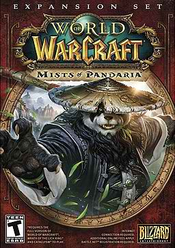
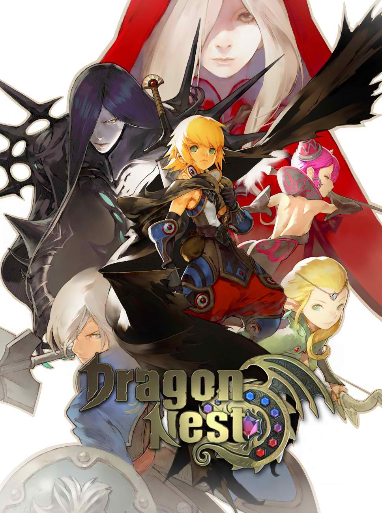
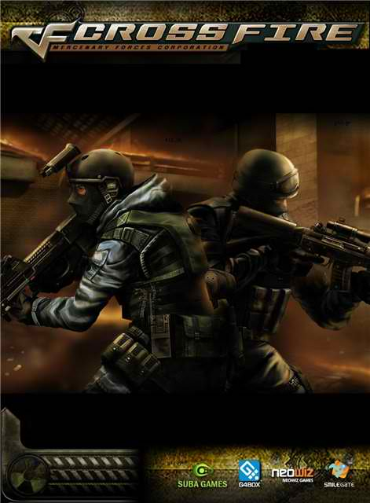

- Need for Speed World

NFSW is an online street-racer in the same vein of other games in the Need for Speed series. When it's not about racing, it's about avoiding the long, wheeled arm of the law. The game purports to be massively multiplayer and open world, and in some sense...
- World of Warcraft: Mists of Pandaria

World of Warcraft® is an online role-playing experience set in the award-winning Warcraft universe. Players assume the roles of Warcraft heroes as they explore, adventure, and quest across a vast world. Being "Massively Multiplayer," World of Warcraft allows thousands of players to interact within the same world. Whether adventuring together or fighting against each other in epic battles, players will form friendships, forge alliances, and compete with enemies for power and glory.
The spellbinding world...
- Ran Online PH

RAN Online is campus-based MMORPG, which features schools (Mystic Peak, Sacred Gate and Phoenix) vying to become the best of the best. Players can choose to become the sword-wielding Swordsman, the melee fighter Brawler, the bow-brandishing Archer, and the Qi-Gong expert Shaman.
Previously, these job classes...
- Dragon Nest

Dragon Nest is a fantasy MMORPG with an emphasis on skill-based fighting and combos. Originally released in 2010 to the Korean market, Nexon brings Dragon Nest to the North American market just a year later with a fresh set of voice actors and a whole lot of hype. Dragon Nest lets you play one of four classes, each with their set of two sub-classes, as you quest your way through colorful anime-inspired environments. It will undoubtedly appeal to those who tire of the World of Warcraft UI model, along with those who enjoy a more fast paced, less repetitive fighting system.
Players will...
- Crossfire

Crossfire PH is a multiplayer game sthat allows the player to connect from all sides of the country there are different kinds of crossfire versions it depends on the country were it is being hosted.
It is an online...